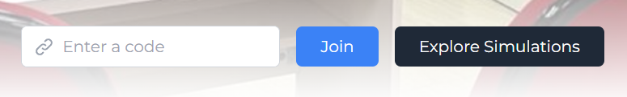
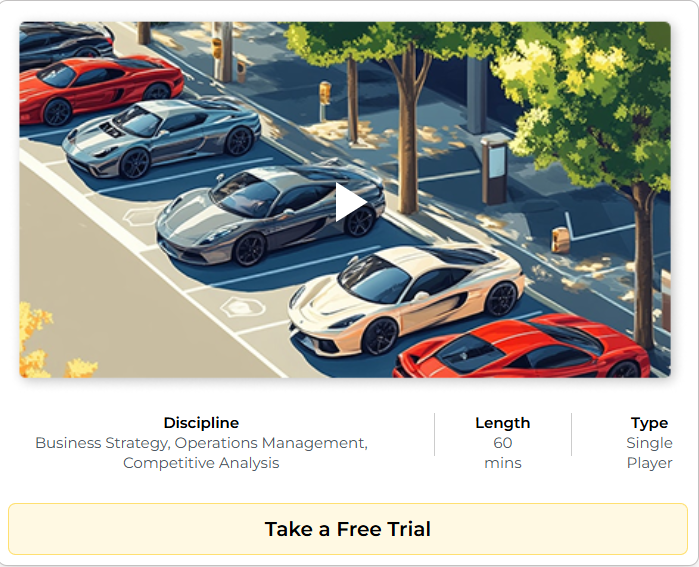

- Independently designed, developed and tested the entire backend and database for two new simulations
- Implemented modular architecture with clear SoC between distinct request-validated REST APIs, service, and data-access layers, with runtime health-check endpoints
- Integrated a JWT-secured, role-based (Instructor/Student) session management system with secure session creation, code-based joining, and instructor-only session controls
- Containerized the backend using Docker and helped set up the backend CI/CD pipeline on Jenkins
- Designed a comprehensive, automated testing suite in PyTest including unit, integration, and end-to-end tests
The actual simulations are proprietary work and hence not possible to share the screenshots publicly. Below are screenshots from MSGames official website, just for reference:

